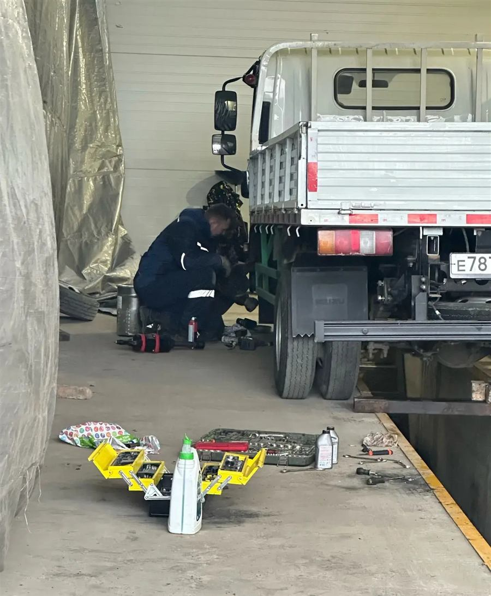
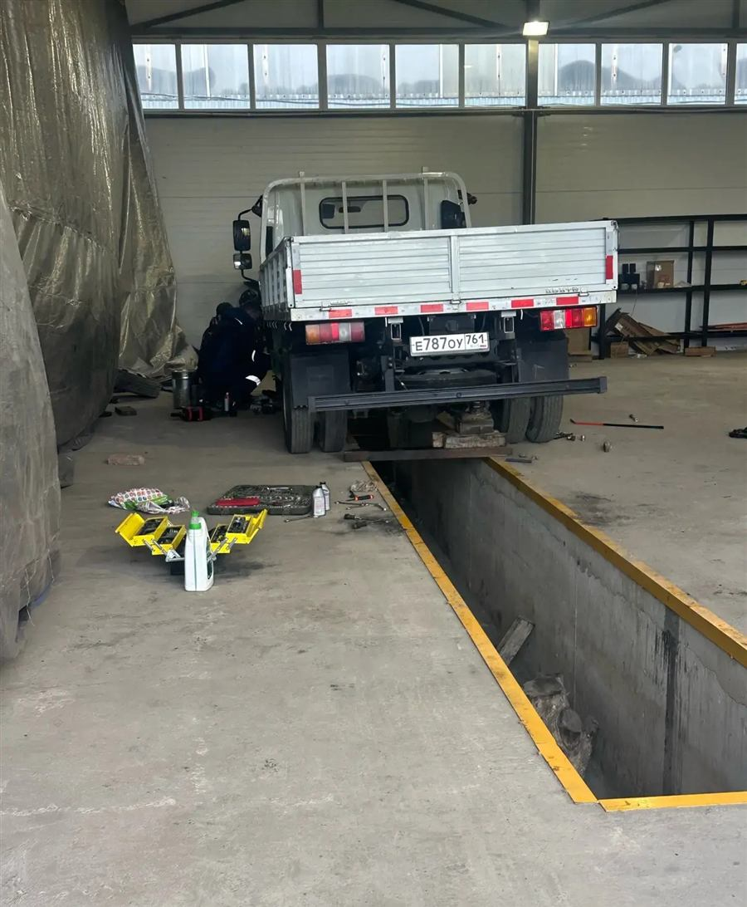
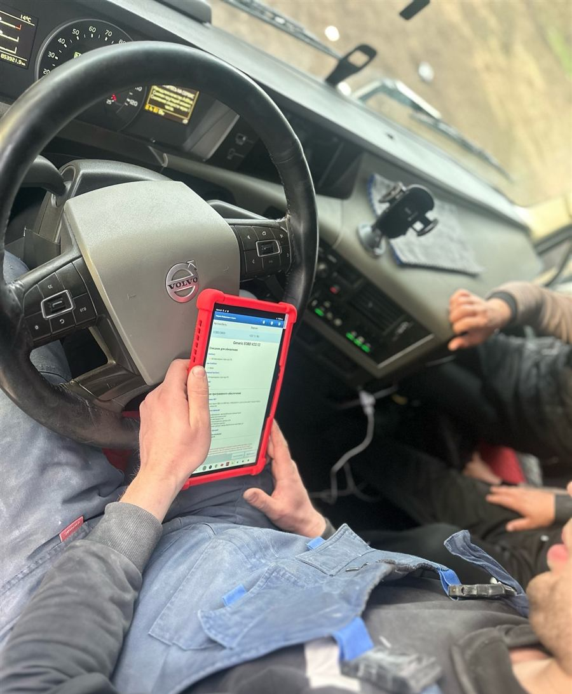
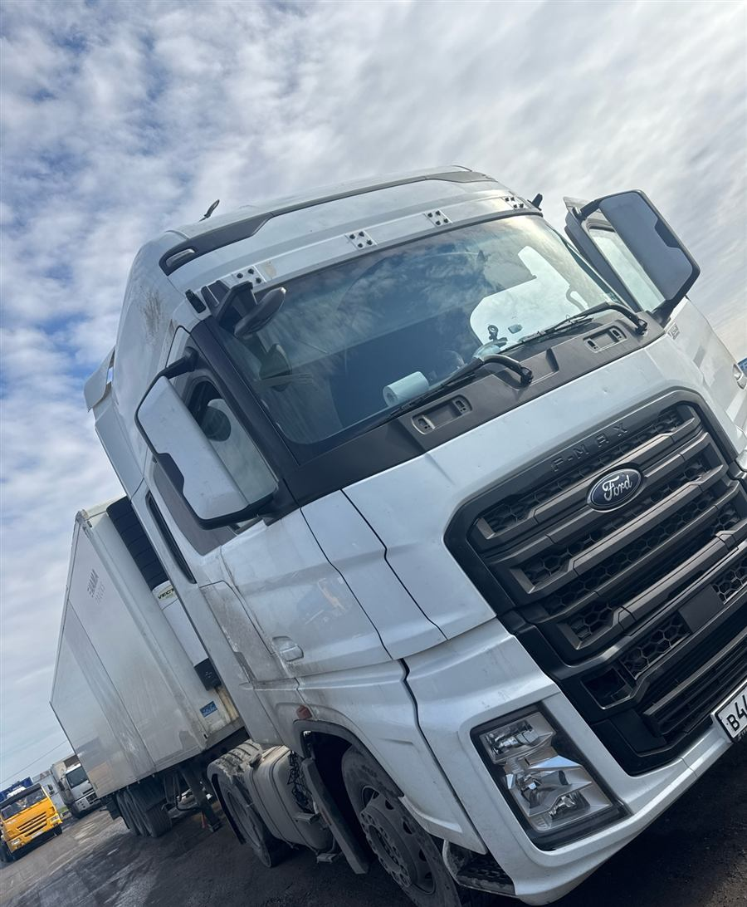
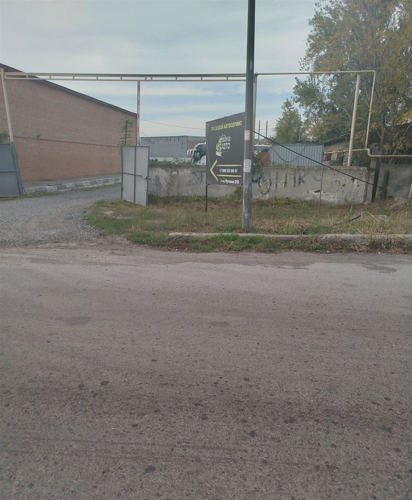

Вернём грузовик в рейс за пару часов
Грузовой сервис на 2-й Луговой. Работаем каждый день с 9 до 20.
Сломались по дороге? Звоните. Подскажем по телефону или приедем.

Что чиним
Грузовики, фургоны, тягачи
JAC, Isuzu, Volvo, Ford и другие марки. Легковые тоже берём.
Двигатель
Дизельные и бензиновые моторы, турбины, сальники, течи масла.
Топливная система
Форсунки, ТНВД, потеря мощности и большой расход.
Ходовая и рулевое
Подвеска, ступицы, рулевые рейки. Яма под грузовые машины.
Коробка передач
Ремонт механических и автоматических КПП.
Электрика и диагностика
Компьютерная диагностика, стартеры, генераторы, фары и оптика.
Кондиционер
Заправка и ремонт климатической системы кабины.
Встали на трассе?
Позвоните и опишите, что случилось. Подскажем, как доехать, или приедем сами.
+7 900 555-00-61На трассе сломался приехали быстренько все сделали и я даже не опоздал на разгрузку!
Сколько стоит
| Компьютерная диагностика | по звонку |
|---|---|
| Ремонт и чистка форсунок | по звонку |
| Замена сальника коленвала | по звонку |
| Ремонт стартера или генератора | по звонку |
| Заправка кондиционера | по звонку |
Сначала диагностика, потом смета. Работы начинаем только после того, как вы согласовали цену. Платить можно картой, наличными или по QR-коду.
Как это выглядит у нас



Что пишут водители
5,0 в 2ГИС, 13 отзывов. Читать в 2ГИС
Сделали быстры и надежно в цене не обидели
Спасибо ребятам за помощь 🫶🏻 Отозвались помочь оперативно быстро. Полечили нашу малыху😇 успехов в дальнейшем , не снижайте сервис обслуживания🙏🏼
Хочу выразить благодарность грузовому автосервису! за профессиональный подход и качественное обслуживание грузовика моего брата. Он обратился с проблемой в работе двигателя — машина теряла мощность, увеличился расход топлива. Мастера сразу произвели хорошее впечатление: оперативно провели комплексную диагностику, подробно объяснили причину неисправности (проблемы с топливными форсунками) и согласовали план работ с точной сметой
Ребята реально молодцы, делают быстро и КАЧЕСТВЕННО, в назначенные сроки укладываются всегда 👍 РЕКОМЕНДУЮ 🤝
Очень сильно выручили ребята, огромное им спасибо! На трассе сломался приехали быстренько все сделали и я даже не опоздал на разгрузку! И очень одыкватные цены. Еще раз спасибо Всем рекомендую!!
Идеальный сервис, приятные цены !
хочу выразить благодарность! Все было сделано очень быстро, позвонили заранее, персонал был доброжелателен и внимателен.Очень приятно получать такой сервис. Спасибо)
Отличный сервис . Быстро сделали.
Ребята молодцы, сделали все быстро, аккуратно. Работой очень доволен. Ремонтировал jac.
Ремонтирал недавно свой большегруз Ребята очень ответственно отнеслись к моей проблеме За пару часов выполнили работу и вернули меня в рейс Большая благодарность!
Очень хороший сервис! Все рассказали помогли разобраться да еще и сделали хорошую скидку Рекомендую!!!
Хороший сервис. Полетел сальник коленвала. Оперативно решили проблему, сэкономили время, спасибо!
Хороший сервис, привозил JAC на ТО, сделали все быстро и качественно

Ищите этот щит у въезда, стрелка показывает на ворота.
Как доехать
- Адрес
- 2-я Луговая улица, 25Б, Железнодорожный район
- Часы
- Каждый день, 9:00–20:00
- Телефоны
- +7 900 555-00-61
+7 989 508-95-63 - Мессенджеры
- WhatsApp, Telegram, ВКонтакте
Перезвоним сами
Оставьте номер и пару слов о поломке. Мастер перезвонит в рабочее время.